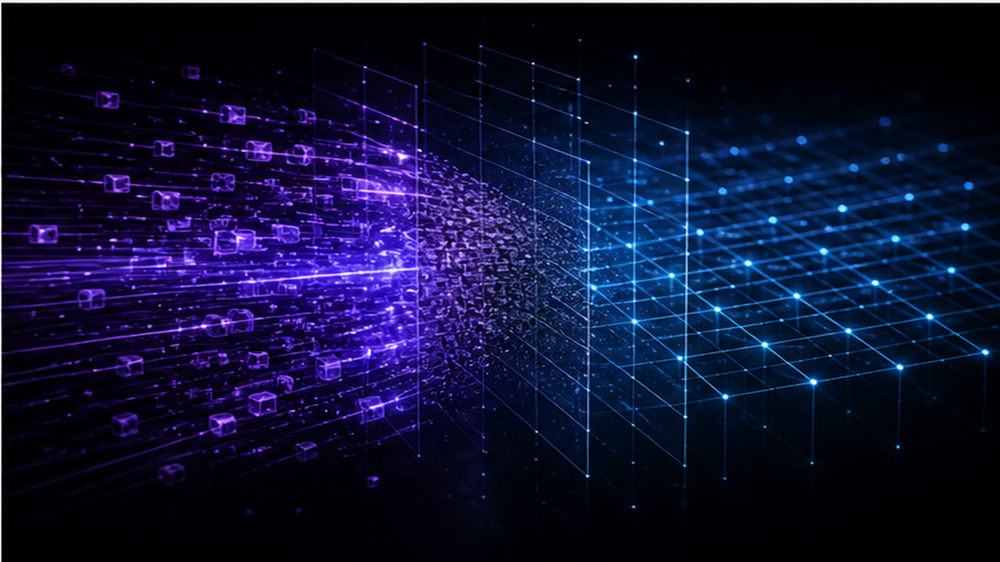

Каждое утро копировать строки из банковской выписки в "главный" Excel или Google Sheets – это не контроль денег, а ручной конвейер с ошибками: колонки плывут, после повторной загрузки появляются дубли, второй расчётный счёт ломает свод. Рабочий ответ – staging-таблица: сырой файл не трогаем, импортируем в отдельный лист, раскладываем в единые колонки с hash и только оттуда кормим ДДС, сверку и дашборд. Ниже – маршрут на один вечер для одной выписки, без SaaS-парсера PDF и без разнесения в 1С.
Staging-таблица в финансах – как промежуточный склад перед отгрузкой: сырьё лежит отдельно, "отгружаем" уже нормализованные позиции. Если строите контур целиком – рядом путь от Excel к финконтуру за 30 дней. Если нужен минимализм отчётности без лишних листов – финансовый минимализм.
DoD пилота простой: одна тестовая выписка за период лежит в Google Sheets на листе staging с едиными колонками; сумма оборотов и число строк сходятся с банком; повторная загрузка того же файла не плодит дубли.
Схема слоёв:
Клиент-банк (CSV/XLSX) → папкаraw/(файл как есть) → листraw_import→ листstaging(нормализация + row_hash) → ДДС / сверка / дашборд
raw_import, staging.staging, никогда сырой импорт.В клиент-банке для пилота берите CSV или Excel. PDF и скан – запасной путь: их приходится конвертировать, а затем вручную сверять суммы. Формат 1CClientBankExchange (файл .txt, часто Windows-1251) – для обмена с 1С; в Sheets он попадёт только после разбора полей или конвертации в таблицу.
Сделайте: один файл – один пилот – понятный DoD. Не делайте: править "главный" отчёт прямо из сырой выгрузки банка.
Пока колонки "как получилось из банка", автоматизация ломается на втором файле. Staging – акт сверки с фиксированными полями: у каждой колонки своё место, как в журнале проводок.
| Колонка | Зачем | Правило |
|---|---|---|
| date | Дата операции | Один формат: YYYY-MM-DD или ДД.ММ.ГГГГ |
| amount | Сумма числом | Запятая → точка; VALUE / NUMBERVALUE |
| direction | Приход / расход | in / out или знак у amount |
| counterparty | Контрагент | TRIM; без "украшательств" в raw |
| purpose | Назначение платежа | Как в банке, без ручной правки смысла |
| account_id | Какой р/с | Обязательно при нескольких счетах |
| bank_doc_id | Номер п/п | Если банк отдаёт – сохраняйте |
| row_hash | Дедуп | Хэш от ключевых полей |
| source_file | Имя файла выгрузки | Для аудита повторных загрузок |
| loaded_at | Когда положили в staging | Дата/время импорта |
staging ровно по таблице выше – без "ещё пару колонок на всякий случай".account_id даже для одного счёта (например rko_main).Сделайте: жёсткую схему из 10 колонок. Не делайте: "улучшать" названия контрагентов руками в сыром слое.

Загрузка выписки в Google Sheets через Файл → Импорт – основной путь пилота. IMPORTDATA тянет CSV только по URL (http/https), не с диска ноутбука. API банка или n8n – следующий уровень, когда ручной импорт уже стабилен.
raw/ на Drive – файл больше не правите.raw_import (или новый лист, который потом переименуете).;. Неверный разделитель – все данные в одной колонке.Безопасность: полные выписки с ИНН, ФИО и реквизитами не заливайте в публичные онлайн-конвертеры PDF "чтобы быстрее". Для пилота достаточно своего файла и Sheets. Если позже отдаёте фрагмент в нейросеть – маскируйте ИНН, счета и ФИО, суммы можно оставить условными; подробный ритуал – в обезличивании данных для ChatGPT.
Сделайте: импорт с контролем разделителя и снятым автопреобразованием. Не делайте: копипаст строк мышкой из PDF в отчёт.
Сырой слой – как кассовая книга до правок: его можно перечитать. Staging пересобираете формулами, QUERY или скриптом. Правите правила нормализации, не ячейки в raw_import.
row_hash из связки: date + amount + purpose + account_id + bank_doc_id (если есть).=TEXT(date;"yyyy-mm-dd")&"|"&amount&"|"&purpose&"|"&account_id или MD5 через Apps Script.load_log: имя файла, дата загрузки, число строк, сумма оборота, статус ok/error.staging, разные account_id; сырые файлы храните отдельно по счетам.row_hash (идея ключа):
date | amount | purpose | account_id | bank_doc_id
load_log:
source_file | loaded_at | rows | turnover_in | turnover_out | status
Типичные ошибки автоматизации: разные поля у разных банков без маппинга, пароли в скриптах, часовые пояса, автомат без тестовой выборки, комиссии банка, которые "теряются" при сверке. Сначала ручной пилот одной выписки – потом кнопка "Обновить".
Сделайте: hash + load_log + запрет правок raw. Не делайте: удалять строки staging "вручную подчистить" без следа в правилах.
Когда staging стабилен, он становится источником факта для управленки. Отчёты и категории живут сверху, а не внутри сырого импорта.
Это не замена 1С. В 1С остаются учётные документы: DirectBank, клиент-банк (txt) или ручной ввод. Staging в Sheets – для управленческого контура, сверки и дашборда, пока вы не созрели до более тяжёлой интеграции.
Разборы таких контуров без сказок про "ИИ сам разнесёт выписку" – в Telegram "Финансист, который кодит".
Сделайте: один потребитель staging (хотя бы свод оборотов). Не делайте: пять отчётов, пока не сошлись контрольные суммы с банком.
raw/ без правок.raw_import с разделителем ; и снятым "преобразовывать текст".staging с колонками из таблицы выше и заполните account_id.row_hash, заведите load_log, сверьте обороты и 5 строк глазами.Шаблоны и разборы data foundation – в закрытом клубе KODA.
Да, если есть CSV или Excel. Для txt формата 1CClientBankExchange сначала разберите поля или сконвертируйте в таблицу, потом кладите в staging. PDF – только после конвертации и ручной сверки сумм с банком; в публичные конвертеры полные реквизиты не отдавайте.
Один лист staging, колонка account_id на каждый счёт. Сырые файлы храните отдельно. В row_hash обязательно включайте account_id, иначе одинаковые суммы и назначения с разных р/с сольются.
Чтобы можно было пересобрать staging из файла и доказать аудиту происхождение строки. Правки – только в правилах нормализации (формулы, маппинг колонок), не в ячейках raw_import.
Нет. Staging в Google Sheets – управленческий слой. В 1С остаются DirectBank, клиент-банк или ручные документы. Можно жить параллельно: Sheets для ДДС и сверки, 1С для бухучёта.
Сначала ручной пилот одной выписки. Затем папка на Drive + Apps Script или сценарий n8n. Не подключайте автомат, пока не стабильны разделитель, кодировка и hash-дедуп.
Попробуйте в клиент-банке другой формат (Excel, txt, MT940). Если PDF единственный вариант – локальная конвертация + обязательная сверка оборотов; не стройте на OCR основу ежедневного контура без контроля.